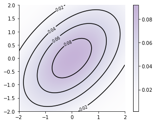
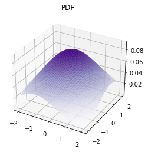

Multivariate Normal Distribution: Introduction
Contents
Multivariate Normal Distribution: Introduction¶
import torch
import matplotlib.pyplot as plt
import seaborn as sns
%matplotlib inline
dist = torch.distributions
prior = dist.MultivariateNormal(loc = torch.zeros(2), covariance_matrix=torch.eye(2) + 1.)
xs = torch.linspace(-2., 2., steps=100)
ys = torch.linspace(-2.,2., steps=100)
xx, yy = torch.meshgrid(xs, ys, indexing="xy")
Z_prior = prior.log_prob(torch.vstack((xx.ravel(), yy.ravel())).t()).reshape(xx.shape).exp()
# Code borrowed from https://jakevdp.github.io/PythonDataScienceHandbook/04.04-density-and-contour-plots.html
contours = plt.contour(xx, yy, Z_prior, 5, colors='black')
plt.clabel(contours, inline=True, fontsize=8)
plt.imshow(Z_prior, extent=[-2, 2, -2, 2], origin='lower',
cmap='Purples', alpha=0.3)
plt.colorbar();
sns.despine()

ax = plt.axes(projection='3d')
ax.plot_surface(xx, yy, Z_prior, rstride=1, cstride=1,
cmap='Purples', edgecolor='none')
ax.set_title('PDF');

TODO¶
Add all content from https://nipunbatra.github.io/blog/ml/2019/08/20/Gaussian-Processes.html